A Deep Learning Approach to Grasping the Invisible
The target-directed search and manipulation framework underlying the thesis, including exploration, push/grasp coordination, and self-supervised learning.
MASTER'S RESEARCH / CHOICE ROBOTICS LAB / 2022-2024
How can a robot uncover an object it cannot yet see?
A robot looking at a pile does not have all the information it needs to grasp the target. Sometimes it must move the surrounding objects first. My master's thesis investigated how to make that uncovering behavior deliberate, repeatable, and learnable.
I developed AGGRO around a Cartesian robot, RGB-D perception, and self-supervised learning. This walkthrough follows the thesis from hardware integration to policy design and evaluation, using its original figures alongside prototype footage.
AGGRO: Autonomous Gatherer with Guided Retrieval Operations. M.S. in Electrical and Computer Engineering, University of Minnesota, July 2024. Background: Chapter 1, pp. 1-12.
Chapter 2 / pp. 12-16
I adapted a FarmBot Genesis V1.6 into a Cartesian manipulation platform. The aim was a repairable, configurable workspace that could run the push-and-grasp experiments normally carried out with a more complex robot arm.
I integrated the motion system, end effector, sensing, and host-side learning pipeline. The FarmDuino handled motor control and power distribution, the Raspberry Pi ran FarmBot OS, and NVIDIA GPU hardware handled the neural-network computation.
Before scaling up the experiments, I checked the motion budget. Figure 6 compares translation times under default and boosted settings: the time spent moving matters when an experiment needs hundreds or thousands of interactions.
Read this section in the thesis ↗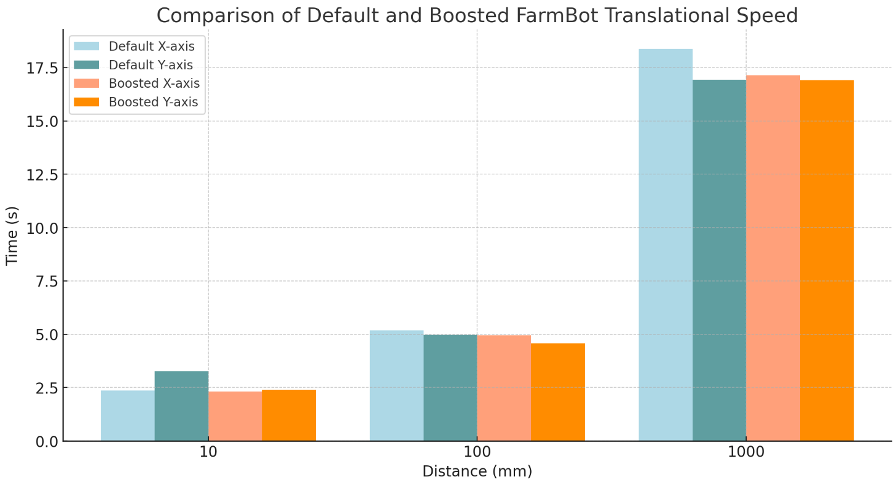
Translation-time measurements compare the default and boosted FarmBot settings. I used hardware benchmarking to assess the practical cost of repeating large numbers of interactions.
Thesis p. 16 / View PDF page ↗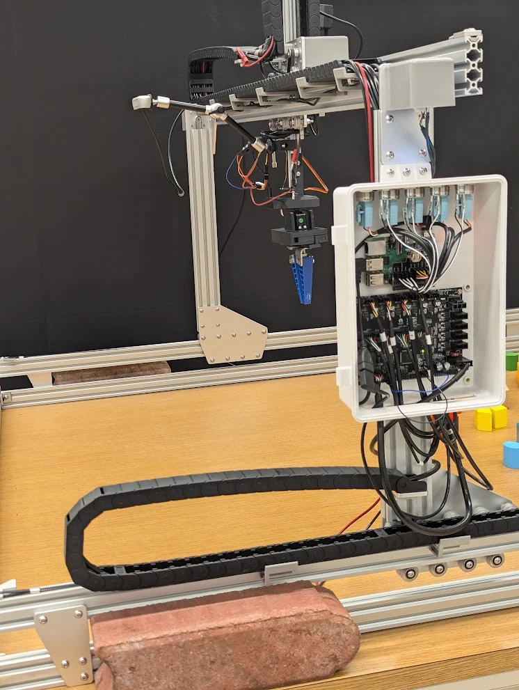
The open controller enclosure and wiring on the gantry.
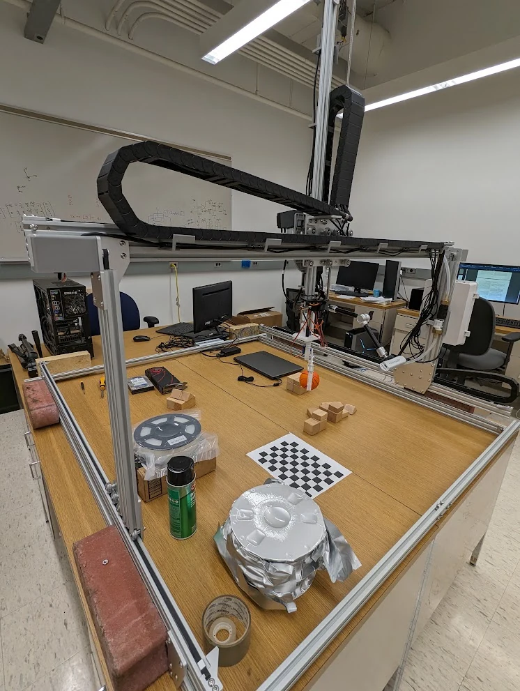
The gantry workspace with calibration targets, test objects, and build materials.
Chapter 2 / pp. 17-20
An external, angled camera made the observation pipeline sensitive to calibration changes and missing depth data. I moved the Intel RealSense RGB-D camera to a wrist-mounted, top-down arrangement.
That gave the camera a known relationship to the end effector. Starting from the robot position and the camera offset, the pipeline could relate a pixel in the image to an action in the workspace.
Figure 7 shows the physical integration. Figure 8 compares the visual input: the engineering goal was a more consistent view of the target, with fewer occlusion-related gaps in the depth data.
Read this section in the thesis ↗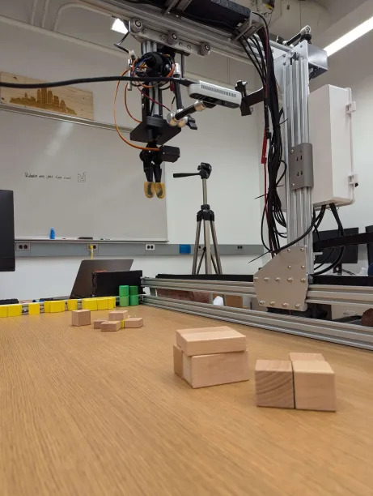
The wrist-mounted RealSense camera and end effector on the Cartesian gantry. A known offset from the tool connects the camera view to the robot position.
Thesis p. 18 / View PDF page ↗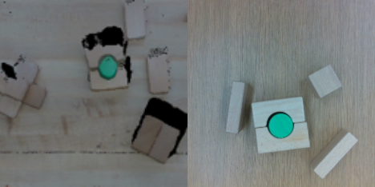
The thesis compares the traditional view with an orthogonal view of the same target. More consistent geometry helps keep visual measurements useful for action selection.
Thesis p. 20 / View PDF page ↗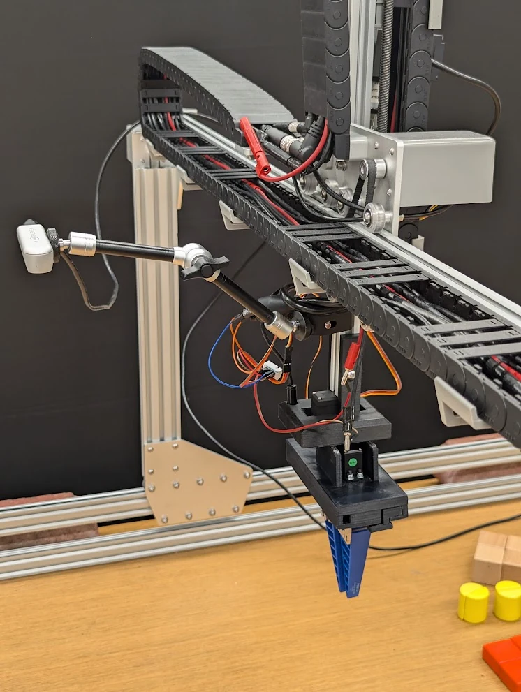
The gantry carriage, camera mount, wiring, and blue gripper.
Chapter 2 / pp. 20-23
The first parallel gripper came from an undergraduate senior-design project. It was too heavy for the magnetic tool mount and had servo-control problems, so I tested lighter articulated designs.
The eventual PETG gripper adapted a design from an online repository for the FarmBot z-axis. Contact surfaces evolved from rubber bands to molded hot-glue tips, improving contact during pushing and grasping.
This was also an electrical integration problem. Servo power faults could damage the printed mechanism, so reliable power delivery and mechanical limits were part of making the tool usable for repeated trials.
Read this section in the thesis ↗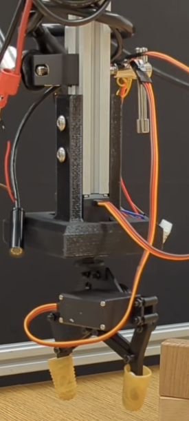
The articulated printed gripper mounted to the z-axis, with compliant contact surfaces on its fingers. This was the result of several mechanical and material revisions.
Thesis p. 21 / View PDF page ↗Chapter 3 / pp. 24-28
A learned action is only useful if the camera and robot agree about where it should happen. I examined calibration, projection and deprojection, and the crop used to turn the camera stream into the network input.
The pipeline worked with a 224 by 224 representation derived from the RGB-D stream. Cropping, object scale, and depth interpretation all affected whether an action selected in the image landed in the right physical place.
The calibration photograph and the paired simulated/physical views show this part of the work. Improving that consistency enabled repeatable observations; sustained real-world online training remained outside the thesis scope.
Read this section in the thesis ↗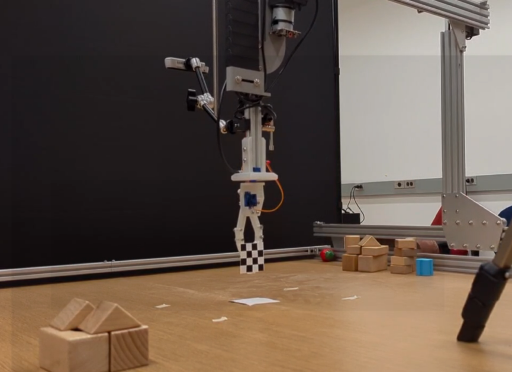
The checkerboard and external camera used in the calibration process. This setup illustrates the alignment work that motivated moving to a more stable camera arrangement.
Thesis p. 26 / View PDF page ↗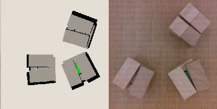
The corresponding simulated and physical views show why object scale, cropping, and camera geometry must agree before the policy can choose useful actions.
Thesis p. 27 / View PDF page ↗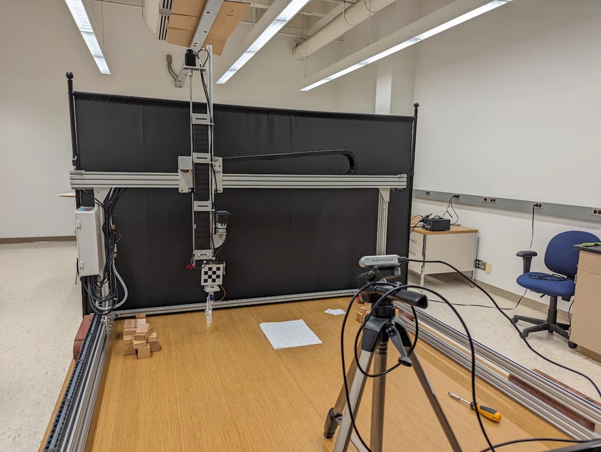
The research rig with a tripod-mounted camera and calibration target.
Chapter 3 / pp. 28-34
I compared segmentation approaches for the controlled target-and-block setup. Lightweight RefineNet struggled with similar colors and changing conditions; K-means offered a practical way to isolate the visible target in these experiments.
The yellow region in Figure 12 is the target mask: pixels the system treats as belonging to the object it wants. This is a cue for deciding where to act, and later becomes a measure of progress when more of the target is uncovered.
I then reproduced the earlier Grasping the Invisible (GTI) pipeline on the physical platform using basic, moderate, and complex clutter. Figures 13 and 14 connect the test arrangements to the observed number of moves. GTI supplied the prior search-and-grasp framework; my work integrated it with this platform and investigated its limitations.
Read this section in the thesis ↗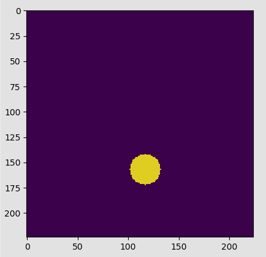
The K-means target map isolates the visible target pixels. The mask provides both a spatial cue for the policy and a way to measure how much of the target is exposed.
Thesis p. 30 / View PDF page ↗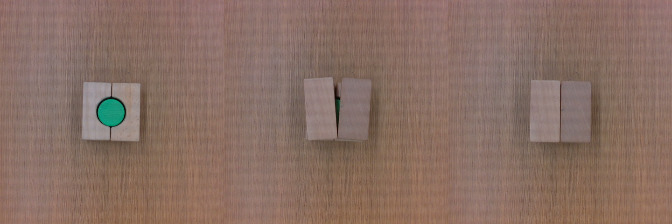
Basic, moderate, and complex block arrangements used to replicate the earlier Grasping the Invisible experiments on the AGGRO platform.
Thesis p. 33 / View PDF page ↗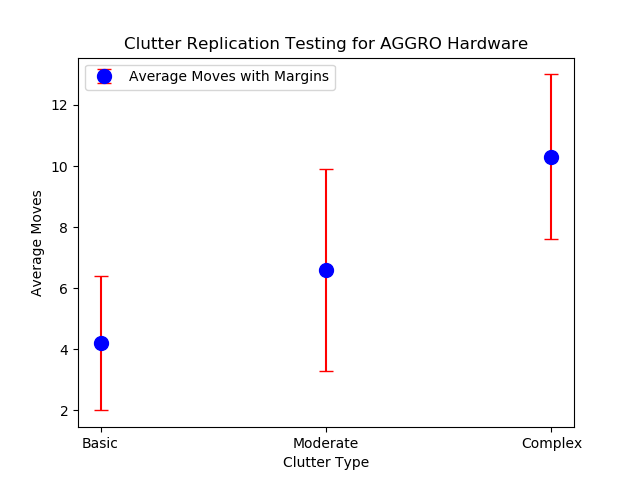
Average moves and the plotted margins for the three clutter types. More complex arrangements required more actions in these replication tests.
Thesis p. 34 / View PDF page ↗Chapter 4 / pp. 36-40
Physical testing exposed two problems: camera distance changed the scale of the input, and a tiny visible fragment could be treated as enough evidence to move into grasp coordination before the target was fully uncovered.
I also investigated searching across four workspace regions. The early heuristic compared normalized action values between the regions to choose where to push next. Its behavior was inconsistent, so I deferred it rather than treating it as a solved scaling method.
These tests motivated a more focused question: could I explicitly train a policy to uncover the object before handing it to the existing singulation and grasping pipeline? A Q-map, shown here, is the network’s estimate of how useful each candidate action will be.
Read this section in the thesis ↗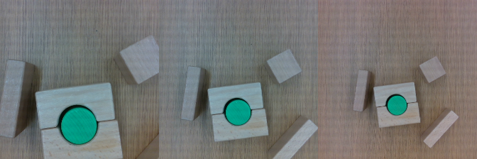
Views captured at 20, 120, and 220 cm. The changing size of the same target helps explain why matching visual scale matters when transferring the pipeline.
Thesis p. 37 / View PDF page ↗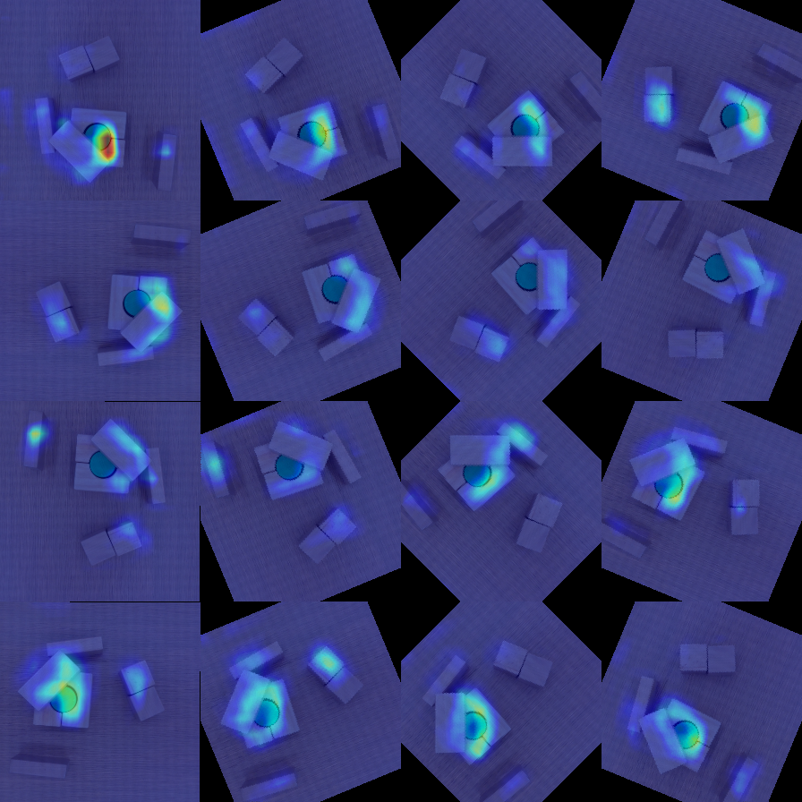
Action-value maps from the original GTI pipeline in a physical scene. Each rotated view represents a candidate action orientation; warmer regions indicate higher predicted value.
Thesis p. 38 / View PDF page ↗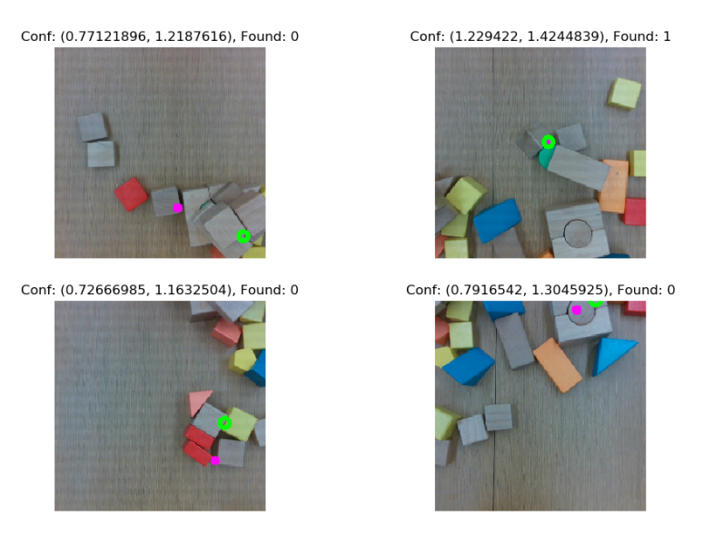
Four workspace views used for a simple scaling heuristic. I compared normalized affordance values across regions, but did not find sufficiently consistent performance to continue with this approach.
Thesis p. 40 / View PDF page ↗Chapter 4 / pp. 41-43
I built a programmatic scene-generation setup around structured clutter: bridge-like blocks and covering blocks arranged around the target. Configuration data specified the meshes, positions, and rotations.
The simulator spawned these arrangements at varied positions and orientations without overlap. This made repeated training and evaluation possible while keeping the task recognizable.
The variation was useful, but it came from a particular family of block arrangements. That matters when interpreting the results: learning these scenes does not establish reliable behavior in arbitrary household clutter.
Read this section in the thesis ↗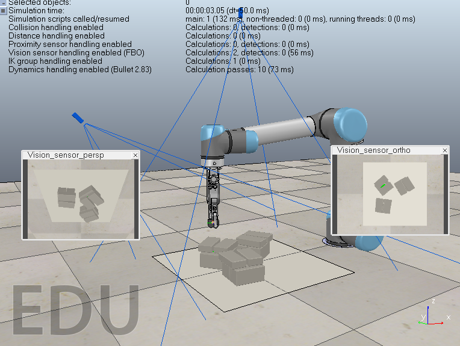
The simulator places structured block arrangements at varied positions and rotations. The camera insets show the observations used to inspect those generated scenes.
Thesis p. 43 / View PDF page ↗The simulated arm moves among the generated blocks. Camera overlays and inset views connect the robot's actions to the observations used by the learning pipeline.
Expand virtual robot animation ↗Supporting demonstration: simulated block rearrangement across repeated trials.
Expand demonstration ↗Chapter 4 / pp. 43-48
For this stage I trained the pushing network, leaving the grasping network out of the new training loop. The baseline reward followed the change in visible target-mask area: a push that exposes more of the target provides useful feedback.
When the target is fully hidden, there is no visible target mask to guide the first action. I introduced a pseudo-target region as a search cue. It tells the policy where to investigate; it does not mean the camera has detected the hidden object.
The six variants separate changes to the reward, the spatial cue, and initialization from an existing GTI policy. This makes the comparison more informative than changing every part of the system at once.
| Policy | What changed |
|---|---|
| Baseline | Reward increases in visible target area. |
| Penalty | Vary feedback for progress, stasis, and negative changes. |
| Strict | Reward large uncovering changes rather than small gains. |
| Pseudo | Add a target-location cue while retaining the baseline uncovering objective. |
| GTI fine-tune | Start from a pretrained GTI policy and train on the uncovering objective. |
| GTI fine-tune + pseudo | Combine pretrained initialization with the location cue. |
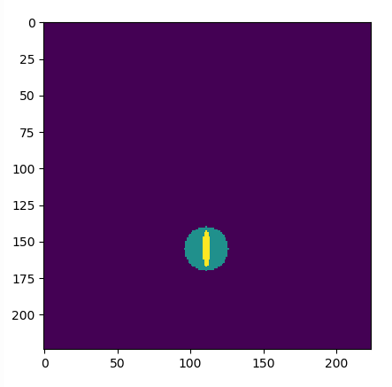
A pseudo-target region gives the policy a location to investigate even without a complete visible target. In this example, the lower-valued region surrounds a small visible target sliver.
Thesis p. 47 / View PDF page ↗Chapter 5 / pp. 49-53
I trained each of the six variants for 3,000 iterations. Figures 20 and 21 show the difference between the comparatively stable baseline run and the more oscillatory fine-tuned, pseudo-guided run.
Figure 22 puts the loss traces together. Loss tracks the learning objective, so it helps diagnose training behavior; it is not itself a measure of successful retrieval.
The thesis reports noticeable behavioral improvement around 1,500-2,000 iterations. It also records a weakness shared by the models: performance deteriorated when the structured clutter became highly disordered.
Read this section in the thesis ↗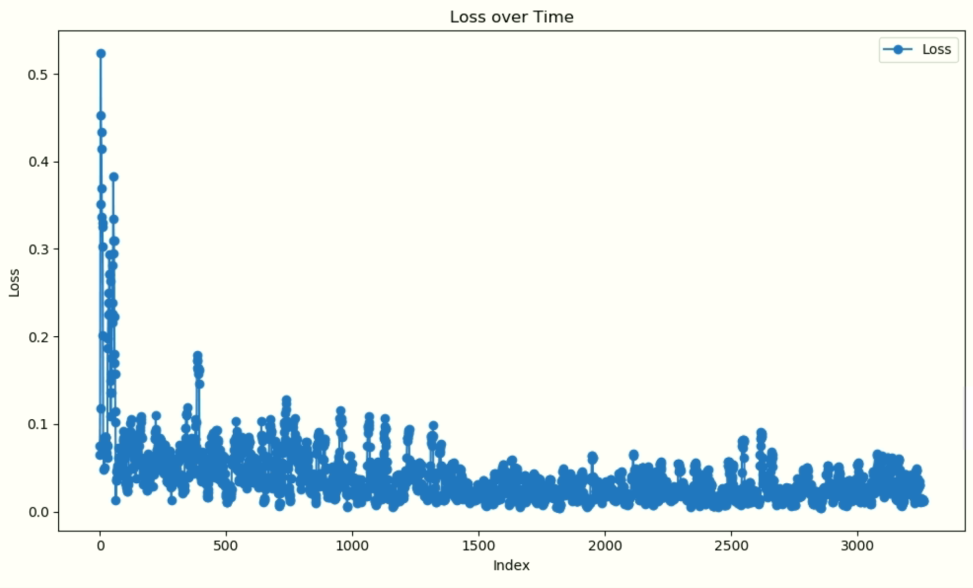
The baseline loss trace over 3,000 training iterations. The large early error settles into a comparatively stable range as the policy learns.
Thesis p. 50 / View PDF page ↗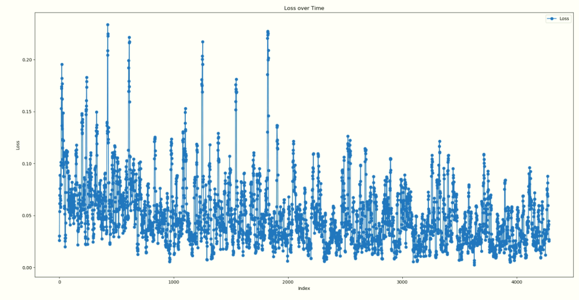
The corresponding training trace for GTI fine-tuning plus pseudo-target guidance shows larger oscillations. Training behavior differed even when the policies addressed the same uncovering task.
Thesis p. 51 / View PDF page ↗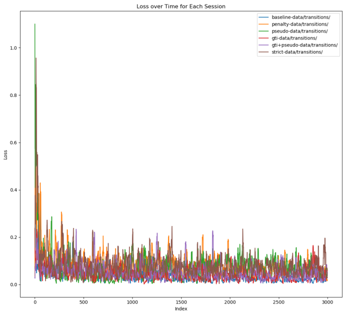
Loss traces for the six policy variants. These describe learning behavior; the separate evaluation measures whether the trained policies actually uncover the target.
Thesis p. 53 / View PDF page ↗Chapter 5 / pp. 53-55
I evaluated the trained policies for 100 iterations each in dynamically generated, stylized clutter. Figure 23 preserves the original mean-and-error-margin plot, including the original GTI policy as a comparison.
The baseline was the strongest overall policy in the thesis discussion, and the pseudo-guided policy was useful for revealing hidden targets. Fine-tuning sometimes reduced the actions needed, but retained more disruptive behavior toward surrounding clutter.
That distinction is important: taking fewer actions and disturbing less of the scene are different outcomes. Figure 24 shows the baseline’s action preferences across clutter arrangements and candidate push orientations.
Read this section in the thesis ↗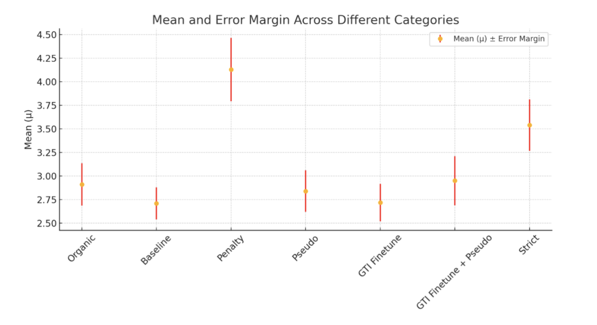
The original mean-and-error-margin plot from the thesis, comparing the six variants with the original GTI policy. The surrounding discussion also considers how much the policies disturb nearby clutter.
Thesis p. 54 / View PDF page ↗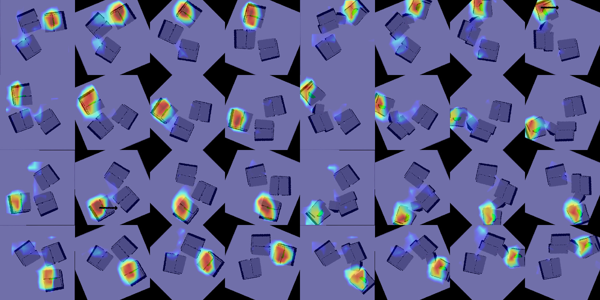
Baseline action-value maps across different clutter arrangements. The repeated rotations visualize candidate push directions rather than a time sequence.
Thesis p. 55 / View PDF page ↗Chapter 5 / pp. 55-58
I carried out initial physical feasibility tests with the baseline and pseudo policies. In fully occluded scenes, I manually placed the pseudo-target region over the clutter to give the guided policy a starting location.
The resulting strategy separates three jobs: use the pseudo policy to begin revealing a target, use the baseline to uncover more of it, and use the existing GTI pipeline to create grasping room and retrieve it.
These were limited physical tests, not a broad real-world benchmark. The main completed evaluation was in simulation; autonomous target-region selection and sustained online learning were still open work.
Read this section in the thesis ↗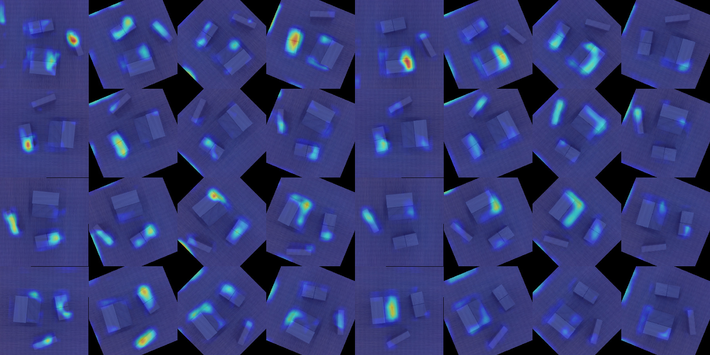
The original GTI and pseudo-policy action maps in the fully occluded setting. These accompany the initial physical feasibility tests, where the search region was supplied manually.
Thesis p. 56 / View PDF page ↗Supporting prototype footage: the physical robot moves blocks and reveals the green target. This clip shows the hardware in action; the thesis documents the policy evaluation.
Expand demonstration ↗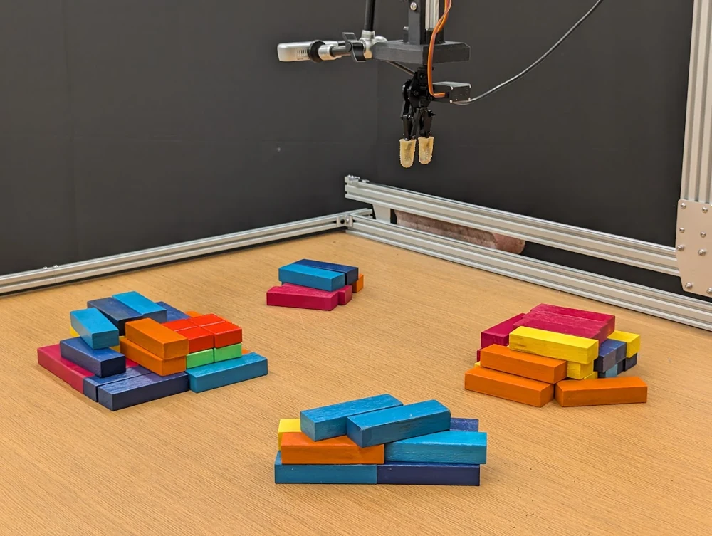
The gripper above four arrangements of colored blocks in the research workspace.
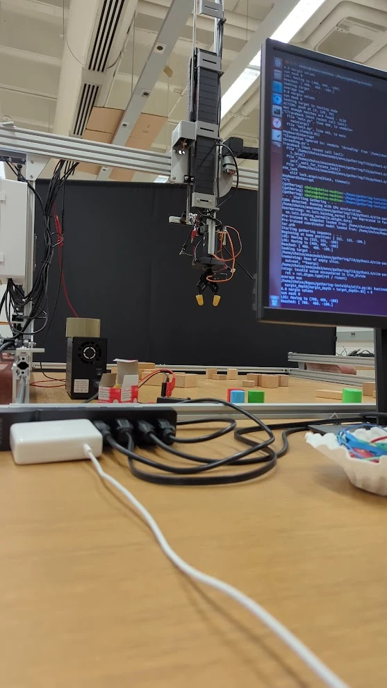
Robot testing with software output visible beside the rig.
Chapter 6 and closing discussion / pp. 59-70
The completed work brought together the physical platform, more consistent perception, automatic scene generation, six uncovering-policy experiments, and initial physical validation. The sequence below captures the proposed handoff between specialized policies.
The next research direction was longer autonomous experiments with less manual setup. That would require dependable scene resets, broader clutter evaluation, and a way to supply useful search regions without placing them by hand.
The final chapter also considers RF-based localization, thermal sensing, and transformer-based methods as possible future inputs and models. Those are research directions discussed in the thesis, not capabilities implemented or evaluated here.
Read this section in the thesis ↗Investigate a supplied search region when the target is hidden.
Increase the visible target area once there is something to observe.
Create space around the exposed target, then coordinate pushing and grasping.
RESEARCH CONTEXT
I completed this research at the University of Minnesota with Professor Changhyun Choi and colleagues in the CHOICE Robotics Lab.
All research photos, figures & videos ↗
RESEARCH FOUNDATIONS
The papers below provide the prior methods and simulation resources behind this research. My platform, training experiments, and findings are documented in my master's thesis, particularly Chapters 2 through 5.
The target-directed search and manipulation framework underlying the thesis, including exploration, push/grasp coordination, and self-supervised learning.
Related CHOICE Robotics Lab work on searching for a target from a reference image, with hierarchical policies for exploration and retrieval.
The visual pushing-and-grasping work connecting pixel-wise action predictions with self-supervised Q-learning. Its released implementation includes the V-REP environment, now known as CoppeliaSim, for training and evaluating manipulation policies.
Simulation code and training setup ↗